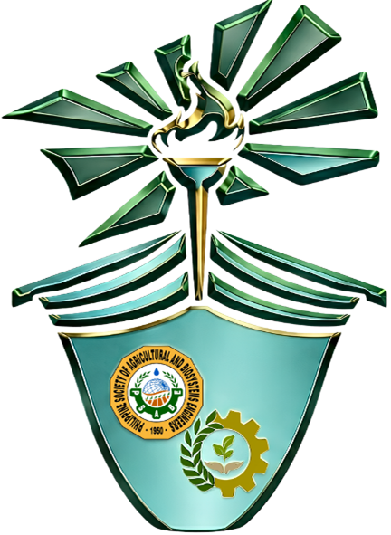

◎
Our Mission
To develop competent, service-oriented future professionals through learning, collaboration, and meaningful community engagement.

PSABE-PPGCSU CHAPTERLog InINNOVATION · SUSTAINABILITY · COMMUNITY
Empowering future agricultural and biosystems engineers through leadership, innovation, and service to our communities.
Discover Our Chapter →WHO WE ARE
A community of aspiring agricultural and biosystems engineers committed to learning, leadership, and sustainable development.
To develop competent, service-oriented future professionals through learning, collaboration, and meaningful community engagement.
A proactive student organization contributing to sustainable agriculture and resilient communities.
Excellence, integrity, innovation, teamwork, and service.
BE PART OF IT
Watch this space for upcoming chapter activities and gatherings.
Opportunities to learn, share knowledge, and grow together.
Activities that connect engineering knowledge with community needs.
STAY INFORMED
Check back for updates from PSABE-PPG CSU Chapter.
Important reminders and member information will be shared in this section.
Look here for future learning, leadership, and service opportunities.
OUR JOURNEY
Celebrating the people, projects, and shared efforts that move our chapter forward.
MEET OUR MENTORS
Meet the faculty members who support and guide the development of future agricultural and biosystems engineers.
Faculty adviser information will be added here.
Faculty profiles and details will be added here.
Academic guidance for aspiring agricultural and biosystems engineers.